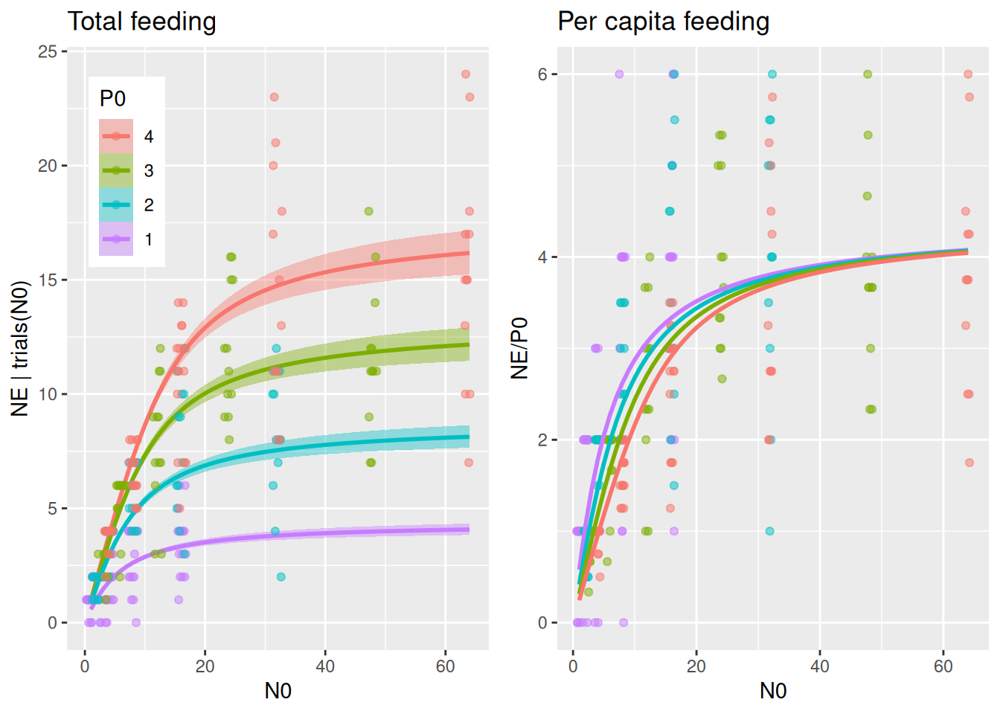
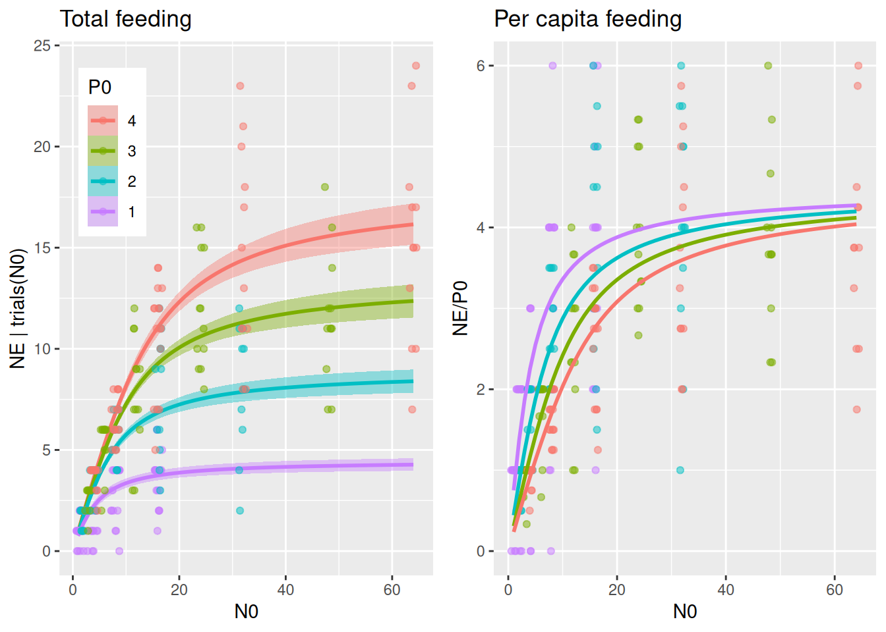
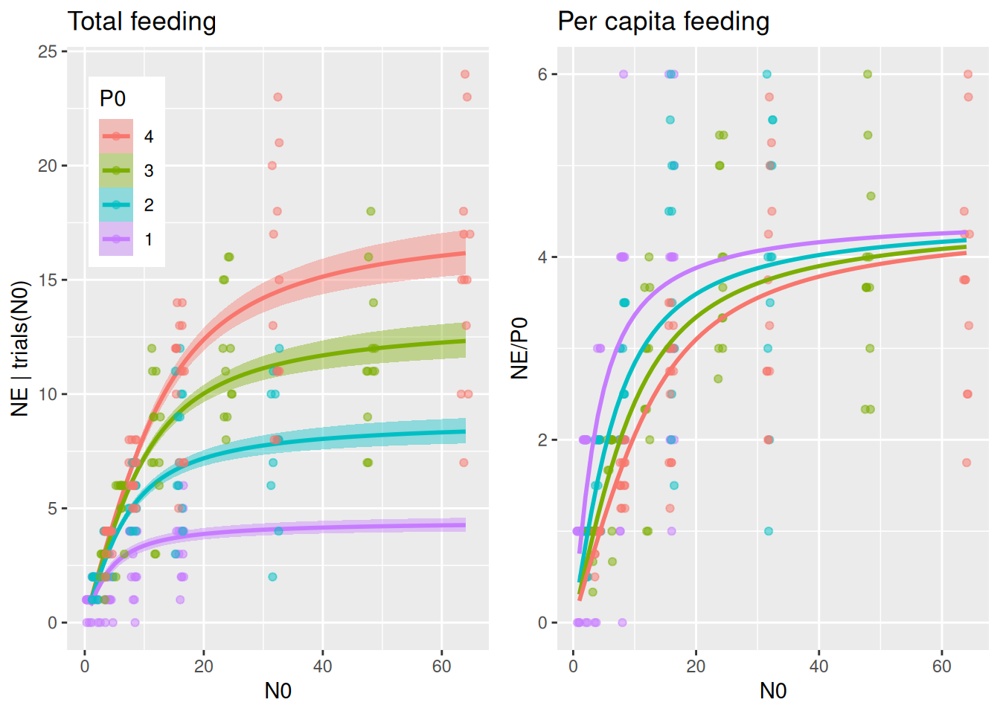
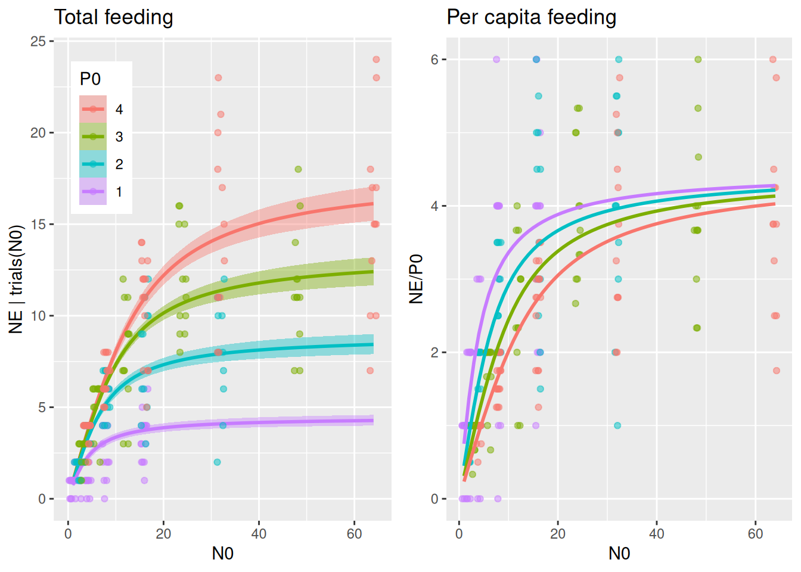
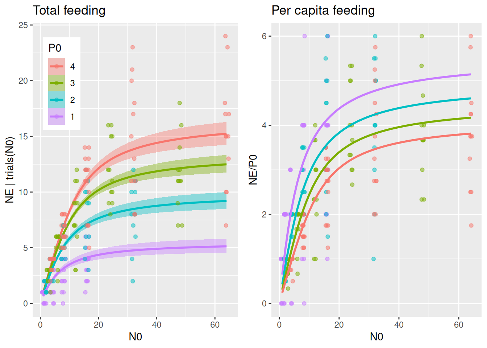
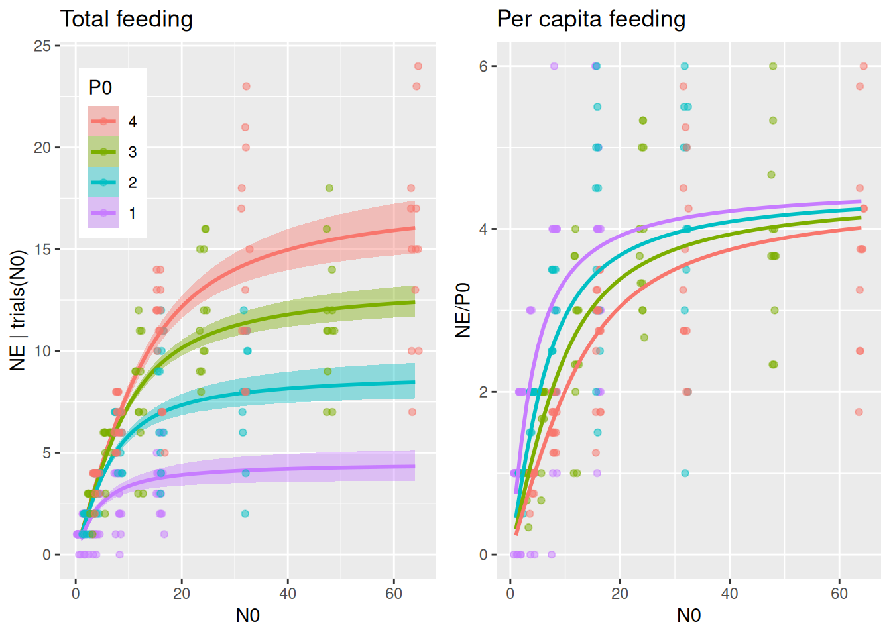

All previous models included predator abundance explicitly. E.g. in the type 2 functional response model, the realized total feeding rate\[F_\text{total}(N,P)=\frac{aN}{1+ahN}P\] consists of the per-capita feeding rate\(F_\text{capita}(N)=\frac{aN}{1+ahN}\), and total feeding is proportionial to predator abundance \(P\). This proportionality, however, assumes that predator individuals do not interfere with each other and that an individual’s attack rate \(a\) and handling time \(h\) are independent of predator abundance \(P\).
Here, we will include models that assume predator interference affects the per-capita feeding rate by decreasing attack rates and / or increasing handling times, see Skalski & Gilliam (2001), for example.
We use a dataset from Papanikolaou et al. (2020) downloaded from Dryad. Mirid nymphs (here only 1st instar data used) feed on Lepidoptera eggs, and experiments were performed with varying predator abundance of 1, 2, 3, or 4 individuals. Eaten eggs were not replaced. The total number of eaten eggs seems to increase with predator abundance (to no surprise!), but we are interested if per capita feeding is affected by predator interference. Note that models will be fitted to the data on the observed scale (total number of eaten eggs, integers), and not the fractional numbers of the per capita feeding.
The Beddington-DeAngelis model\[F(N,P)=\frac{aN}{1+c(P-1)+ahN}P\] includes predator abundance in the per-capita feeding part as well, with an interference coeffient \(c\geq0\). The term \((P-1)\) makes the functional response collapse to a classical Holling type 2 for \(P=1\) and decreases the per-capita feeding rate for \(P>1\). Using \[\tilde{a}(P)=\frac{a}{1+c(P-1)}\] the model can be rewritten as \(F(N,P)=\frac{\tilde{a}N}{1+\tilde{a}hN}P\), which takes the form of a Holling type 2 with a predator-dependent attack rate \(\tilde{a}(P)\). Hence, attack rates decline with predator abundance as a rational function, while handling time remains unaffected.
The Hassell-Varley model\[F(N,P)=\frac{aN}{P^c+ahN}P\] takes a different form, but also collapses to a Holling type 2 for \(P=1\). Similarly, it can be re-parameterized using \[\tilde{a}(P)=aP^{-c}\] and rewritten as \(F(N,P)=\frac{\tilde{a}N}{1+\tilde{a}hN}P\), again. Attack rates now decline with predator abundance as a power function, while handling time remains unaffected.
Alternatively, as presented in the tutorial on continuous predictors, it is easy to make any model parameter (linearly) dependent on other observed variables. In brms, just by specifying a~P, a linear model with intercept and slope is imposed on the attack rates. Additionally, a log-link can be used to ensure nonnegative attack rates with nlf(a~exp(loga)), loga~P. Here, the Holling type 2 \[F(N,P)=\frac{\tilde{a}N}{1+\tilde{a}hN}P\] uses a linear model on logscale (centering in \(P=1\) is optional, but can be enforced with loga~I(P-1)): \[\log\tilde{a}=\log a +c(P-1)\] which is equivalent to attack rates depending on predator abundance as an exponential function\[\tilde{a}= a e^{c(P-1)}\]
For experiments without prey replacement, the reduction to the Holling type 2 (with additional parameter dependencies) for all three models also means that we can use an analytical solution for \[\frac{dN}{dt}=-\frac{\tilde{a}N}{1+\tilde{a}hN}P\] using Rogers’ Random Predator equation.
Holling 2 fit
We start by fitting the classical Holling type 2 as a null model. It already includes predator abundance P0 as a predictor. In the previous tutorials, this was usually constant across experiments, now it is a treatment variable.
Family: binomial
Links: mu = identity
Formula: NE | trials(N0) ~ Type2H_dyn(N0, P0, 1, a, h)/N0
a ~ 1
h ~ 1
Data: df (Number of observations: 268)
Draws: 4 chains, each with iter = 2000; warmup = 1000; thin = 1;
total post-warmup draws = 4000
Regression Coefficients:
Estimate Est.Error l-95% CI u-95% CI Rhat Bulk_ESS Tail_ESS
a_Intercept 1.00 0.07 0.87 1.15 1.00 1258 1800
h_Intercept 0.23 0.01 0.21 0.25 1.00 1121 1634
Draws were sampled using sampling(NUTS). For each parameter, Bulk_ESS
and Tail_ESS are effective sample size measures, and Rhat is the potential
scale reduction factor on split chains (at convergence, Rhat = 1).
By specifying effects="N0:P0 in conditional_effects(), predicted number of total eaten prey is plotted for several predator abundance levels. It would be very convenient if we could plot the same (data & predictions) divided by P0 to visualize per capita feeding as well, but this is not possible with conditional_effects(). Alternatively, we compute predictions NE manually with fitted() and plot NE/P0. We will use this for all subsequent models, too, so we wrap these two plots into a function to be called later on.
plot_fit =function(fit, df){# total feeding with conditional_effects() as usual p1 =plot(conditional_effects(fit,effects="N0:P0",int_conditions=data.frame(P0=1:4)),points=FALSE, plot=FALSE) p1 = p1[[1]] +geom_jitter(aes(N0,NE, col=as.factor(P0)),inherit.aes =FALSE,data=df,alpha=0.5, width=0.8, height=0, size=1.5) +theme(legend.position =c(0.05, 0.95),legend.justification =c("left", "top")) +ggtitle("Total feeding")# can't just divide the conditional_effects object by P0 to get per capita# recreate these predictions (NE) manually with fitted() and then plot NE/P0 Nmax =max(df$N0) newdata =data.frame(N0 =rep(1:Nmax,4),P0 =c(rep(1,Nmax), rep(2,Nmax), rep(3,Nmax), rep(4,Nmax))) NE.pred =fitted(fit, newdata = newdata) newdata$NE = NE.pred[, 1] p2 =ggplot(df, aes(N0,NE/P0, col=factor(P0))) +geom_jitter(alpha=0.5, width=0.5, height=0, size=1.5) +geom_line(data=newdata, linewidth=1) +scale_color_manual(values =rev(scales::hue_pal()(4))) +theme(legend.position ="none") +ggtitle("Per capita feeding")plot_grid(p1, p2, ncol =2)}plot_fit(fit.1, df)

The per capita plot might surprise at first. Per capita feeding rate\(F_\text{capita}(N)=\frac{aN}{1+ahN}\) is independent of predator abundance for the Holling type 2, so why is per capita realized feeding (number of eaten prey per predator) different? Here, realized per capita feeding is lower for higher predator abundances not because of interference, but because of the dynamical nature of the feeding process without prey replacement. Many predators consume more prey than fewer predators, which means prey density \(N\) and also \(F_\text{capita}(N)\) decline faster when there are more predators, leading to a reduced realized per capita feeding. For high prey availability however, per capita feeding remains unchanged, since feeding rates are limited by handling time and not by prey availability.
Fitting alternative models that include predator interference will elucidate if predator abundance reduces realized per capita feeding more than predicted by this Holling 2 null model.
Beddington-DeAngelis fit
While this package contains a direct implementation of the model that can be used with Type2BD_dyn(N0,P0,1.0,a,h,c), we here use the equivalent formulation of a Holling type 2 model with an explicit, predator abundance dependent attack rate. This has the (only) advantage that we can conveniently use conditional_effects() to plot and fitted() to predict realized attack rates. Here, parameter a0 denotes a single predator’s attack rate at P0=1.
Family: binomial
Links: mu = identity
Formula: NE | trials(N0) ~ Type2H_dyn(N0, P0, 1, a, h)/N0
a ~ a0/(1 + c * (P0 - 1))
a0 ~ 1
h ~ 1
c ~ 1
Data: df (Number of observations: 268)
Draws: 4 chains, each with iter = 2000; warmup = 1000; thin = 1;
total post-warmup draws = 4000
Regression Coefficients:
Estimate Est.Error l-95% CI u-95% CI Rhat Bulk_ESS Tail_ESS
a0_Intercept 1.69 0.24 1.29 2.23 1.00 1565 1697
h_Intercept 0.22 0.01 0.21 0.24 1.00 2026 1862
c_Intercept 0.39 0.12 0.20 0.64 1.00 1599 1603
Draws were sampled using sampling(NUTS). For each parameter, Bulk_ESS
and Tail_ESS are effective sample size measures, and Rhat is the potential
scale reduction factor on split chains (at convergence, Rhat = 1).
Plotting predictions against data reveals that differences in per capita feeding between predator abundance levels is visibly larger than in the Holling type 2 model, caused by a predator interference coefficient \(c>0\).
plot_fit(fit.2, df)

Realized attack rates are plotted against predator abundance and show their decline as a rational function \(\tilde{a}(P)=\frac{a}{1+c(P-1)}\). Note that parameter a0 corresponds to the “intercept” in P0=1.
This section works analogously to the previous one. This model is also implemented as Type2HV_dyn(N0,P0,1.0,a,h,c), but here we use an equivalent formulation with Holling type 2 and corresponding interference model for attack rates.
Family: binomial
Links: mu = identity
Formula: NE | trials(N0) ~ Type2H_dyn(N0, P0, 1, a, h)/N0
a ~ a0 * P0^(-c)
a0 ~ 1
h ~ 1
c ~ 1
Data: df (Number of observations: 268)
Draws: 4 chains, each with iter = 2000; warmup = 1000; thin = 1;
total post-warmup draws = 4000
Regression Coefficients:
Estimate Est.Error l-95% CI u-95% CI Rhat Bulk_ESS Tail_ESS
a0_Intercept 1.71 0.25 1.27 2.29 1.00 1263 1220
h_Intercept 0.22 0.01 0.21 0.24 1.00 2010 1975
c_Intercept 0.54 0.13 0.29 0.78 1.00 1181 860
Draws were sampled using sampling(NUTS). For each parameter, Bulk_ESS
and Tail_ESS are effective sample size measures, and Rhat is the potential
scale reduction factor on split chains (at convergence, Rhat = 1).
Note that parameters a0 and h can be directly compared between models, while this is not true for interference parameter c. Interference parameters of a rational function (above) and a power function (here) are not the same.
Plotting reveals a similar pattern as Beddington-DeAngelis model, with a stronger effect of predator abundance on realized per capita feeding than in the Holling type 2 null model.
plot_fit(fit.3, df)

Also, the power law relationship of \(\tilde{a}(P)=aP^{-c}\) shows a similar decline as the previous model. Again, parameter a0 is the “intercept” in P0=1.
While the previous two models used specific nonlinear relationships of attack rates with predator abundance (rational function and power function), we here introduce a linear modeling framework with a log-link to keep attack rates positive. alog~P0 specifies a linear model with intercept & slope, while alog~I(P0-1) centers the model in P0=1. Here, the interference effect is identified as the model’s slope, which can be positive or negative. This GLM-style formulation would make inclusion of potential additional fixed or random effects easy, e.g. alog ~ I(P0-1.0) + predictor1 + (1|predictor2) etc.
FR.formula =bf( NE |trials(N0) ~Type2H_dyn(N0,P0,1.0,a,h)/N0,nlf(a~exp(alog)), alog~I(P0-1.0), # alternatively alog~P0 without centering in P0=1 h~1,nl =TRUE)FR.priors =c(prior(normal(0.0, 1.0), nlpar="alog"),prior(exponential(1.0), nlpar="h", lb=0))fit.4=brm(FR.formula,family =binomial(link="identity"),prior = FR.priors,data = df,cores =4,stanvars =stanvar(scode=Type2H_dyn_code, block="functions"))expose_functions(fit.4, vectorize=TRUE)summary(fit.4)
Family: binomial
Links: mu = identity
Formula: NE | trials(N0) ~ Type2H_dyn(N0, P0, 1, a, h)/N0
a ~ exp(alog)
alog ~ I(P0 - 1)
h ~ 1
Data: df (Number of observations: 268)
Draws: 4 chains, each with iter = 2000; warmup = 1000; thin = 1;
total post-warmup draws = 4000
Regression Coefficients:
Estimate Est.Error l-95% CI u-95% CI Rhat Bulk_ESS Tail_ESS
alog_Intercept 0.52 0.13 0.26 0.78 1.00 1452 1602
alog_IP0M1 -0.27 0.05 -0.38 -0.16 1.00 1431 1411
h_Intercept 0.22 0.01 0.21 0.24 1.00 1895 1873
Draws were sampled using sampling(NUTS). For each parameter, Bulk_ESS
and Tail_ESS are effective sample size measures, and Rhat is the potential
scale reduction factor on split chains (at convergence, Rhat = 1).
Results look pretty similar to the other two interference models.
plot_fit(fit.4, df)

While realized attack rates look similar, the slope in this exponential function \(\tilde{a}= a e^{c(P-1)}\) is a bit less dynamic across the range of predator abundances than in the previous two models. Note that the “intercept” in P0=1 is given as exp(alog_Intercept).
Interestingly, Holling type 2 has the best R2 value. However, in this non-linear and non-normal modeling framework, R2 has only limited explanatory power. It weighs all squared residuals equally and does not account for the binomial distribution’s variance \(Np(1-p)\) which increases with number of prey.
We use the information criterion instead, which reveals that all interference models perform substantially better than the Holling type 2 null model. The GLM-type model seems to perform best, although the difference between the three interference models is very thin.
The Crowley-Martin model\[F(N,P)=\frac{aN}{(1+ahN)(1+c(P-1))}P\] again includes predator abundance with a single interference coefficient \(c\geq0\) and also collapses to a classical Holling type 2 for \(P=1\). Using \[\tilde{a}(P)=\frac{a}{1+c(P-1)}\]\[\tilde{h}(P)=h(1+c(P-1))\] the model can be rewritten as \(F(N,P)=\frac{\tilde{a}N}{1+\tilde{a}\tilde{h}N}P\) (Holling type 2). Here, interference reduces attack rates by the factor \((1+c(P-1))\) just as in the Beddington-DeAngelis model above, while now interference also increases handling times by the same factor. This means attack rates and also maximum feeding rates \(f_\max=1/h\) decrease with predator abundance by the same factor, e.g. both are reduced by 50% at a certain predator abundance. Note that, theoretically, we could make the model more flexible if needed by allowing individual interference parameters \(c_a\) and \(c_h\) for attack rates and handling times, respectively.
Alternatively, we can make both model parameters \(a\) and \(h\) in the Holling type 2 \[F(N,P)=\frac{\tilde{a}N}{1+\tilde{a}\tilde{h}N}P\] (linearly) dependent on predator abundance. As previously, we impose a log-link on the linear relationship \[ \log\tilde{a}=\log a+c_a(P-1)\] and now also on \[ \log\tilde{h}=\log h+c_h(P-1)\] The log-link ensures positive attack rates and handling times, without restrictions on coefficients \(c_a,c_h\). In brms, the notation nlf(a~exp(loga)), loga~I(P-1) (same for h) is used and could be easily extended to additional fixed or random effects.
Crowley-Martin fit
This package includes an implementation of the model Type2CM_dyn(N0,P0,1.0,a,h,c)/N0, but we use the equivalent formulation with the Holling type 2 and predator-dependent attack rates and handling times. Note that here both models a~... and h~... share the interference parameter c as defined in the original model formulation.
Family: binomial
Links: mu = identity
Formula: NE | trials(N0) ~ Type2H_dyn(N0, P0, 1, a, h)/N0
a ~ a0/(1 + c * (P0 - 1))
h ~ h0 * (1 + c * (P0 - 1))
a0 ~ 1
h0 ~ 1
c ~ 1
Data: df (Number of observations: 268)
Draws: 4 chains, each with iter = 2000; warmup = 1000; thin = 1;
total post-warmup draws = 4000
Regression Coefficients:
Estimate Est.Error l-95% CI u-95% CI Rhat Bulk_ESS Tail_ESS
a0_Intercept 1.18 0.10 1.01 1.39 1.00 1345 1509
h0_Intercept 0.18 0.01 0.16 0.21 1.00 1499 1806
c_Intercept 0.11 0.03 0.06 0.17 1.00 1347 1712
Draws were sampled using sampling(NUTS). For each parameter, Bulk_ESS
and Tail_ESS are effective sample size measures, and Rhat is the potential
scale reduction factor on split chains (at convergence, Rhat = 1).
The interference parameter c now affects attack rates and handling times. Per capita feeding now has P0-specific asymptotes for large N0, while previous models above eventually converge to a joint asymptote for large N0.
plot_fit(fit.5, df)

The relative effects of predator interference on a and h are linked due to a joint parameter c. Here, relative decrease in a for a specific predator level, e.g. factor 0.5 = 50%, means an increase in h by factor 2 = 100%.
These classical models allow only an isolated effect on attack rate (Beddington-DeAngelis & Hassell-Varley), or linked effects on attack rates and handling time (Crowley-Martin). brms makes a more flexible modeling very acessible, by either providing a specific formula via nlf(a~...) and/or nlf(h~...), or by a (generalized) linear modeling framework, e.g. a~predictor1+(1|predictor2) etc. Here, we use a linear model with predictor P0 centered in P0=1 and a log-link to keep attack rates and handling times positive.
Note that estimated parameters including intercepts are on logscale. We find a negative effect of predator abundance on attack rates (95% credible interval notably far away from 0), but no effect on handling time (mean estimate close to 0 and 95% credible interval widely covering 0).
Family: binomial
Links: mu = identity
Formula: NE | trials(N0) ~ Type2H_dyn(N0, P0, 1, a, h)/N0
a ~ exp(alog)
h ~ exp(hlog)
alog ~ I(P0 - 1)
hlog ~ I(P0 - 1)
Data: df (Number of observations: 268)
Draws: 4 chains, each with iter = 2000; warmup = 1000; thin = 1;
total post-warmup draws = 4000
Regression Coefficients:
Estimate Est.Error l-95% CI u-95% CI Rhat Bulk_ESS Tail_ESS
alog_Intercept 0.50 0.17 0.18 0.86 1.00 1041 1009
alog_IP0M1 -0.26 0.08 -0.41 -0.11 1.00 1046 1025
hlog_Intercept -1.51 0.10 -1.70 -1.32 1.00 1052 1450
hlog_IP0M1 0.01 0.04 -0.08 0.09 1.00 1045 1500
Draws were sampled using sampling(NUTS). For each parameter, Bulk_ESS
and Tail_ESS are effective sample size measures, and Rhat is the potential
scale reduction factor on split chains (at convergence, Rhat = 1).
plot_fit(fit.6, df)

While the Crowley-Martin model forced effect on handling time to be positive to simultaneously get a negative effect on attack rate, this model estimates a negative effect on attack rate only.
The previous model with a log-linear dependence of attack rates on predator abundance performs best. There is no sufficient support for including an effect on handling times.
Type 3 models
There are generalized type 3 models (density-dependent attack rates \(a=bN^q\)) available for the
Predictions are computed numerically, i.e. computation will take longer than for the corresponding type 2 models. Alternatively, the generalized Holling type 3 models can be used with parameters depending on predator abundance. For example, the generalized Beddington-DeAngelis model is equivalent to:
# TypeGenBD_dyn(N, P, Time, b, h, q, c)FR.formula =bf( NE |trials(N0) ~Type3GenH_dyn(N, P, Time, b, h, q)/N0,nlf(b~b0/(1.0+c*(P0-1.0))), b0+h+c~1,nl =TRUE)